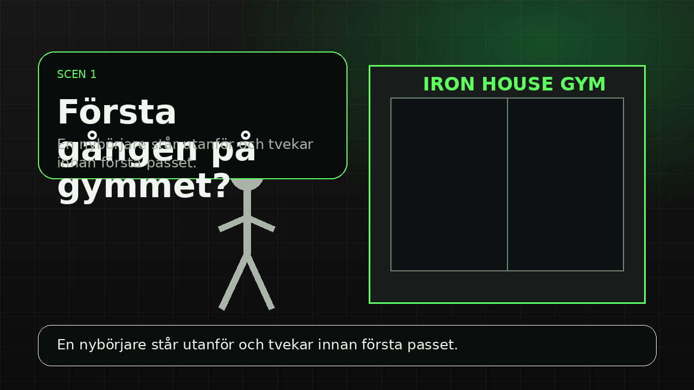
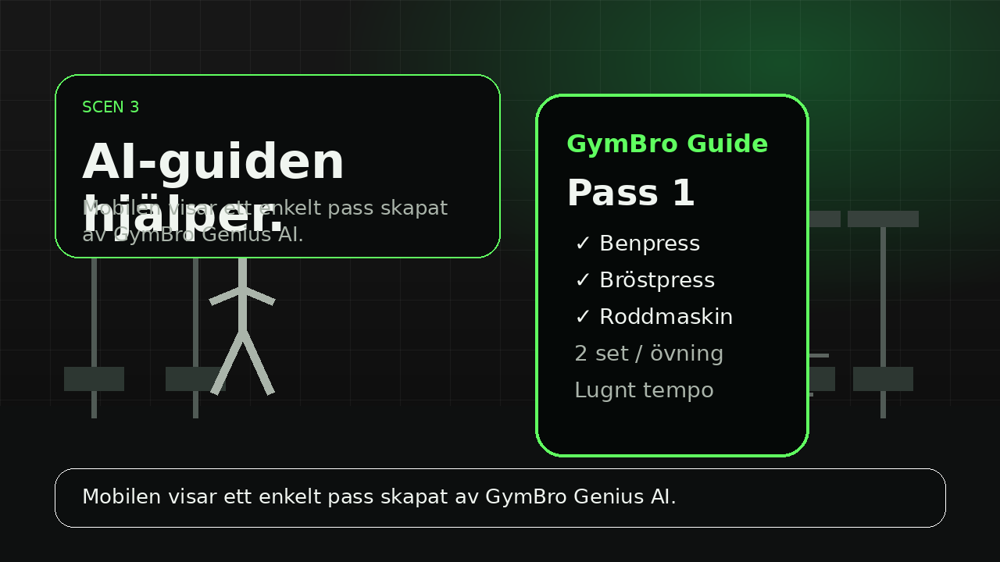
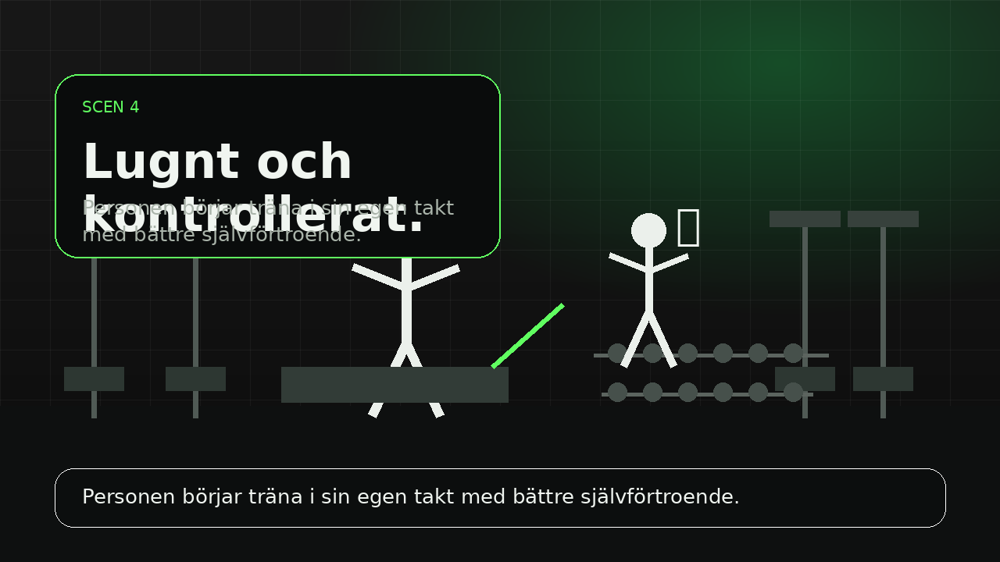
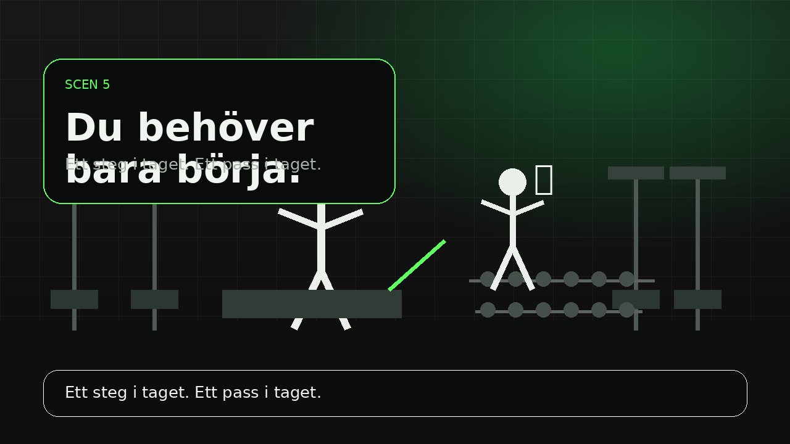
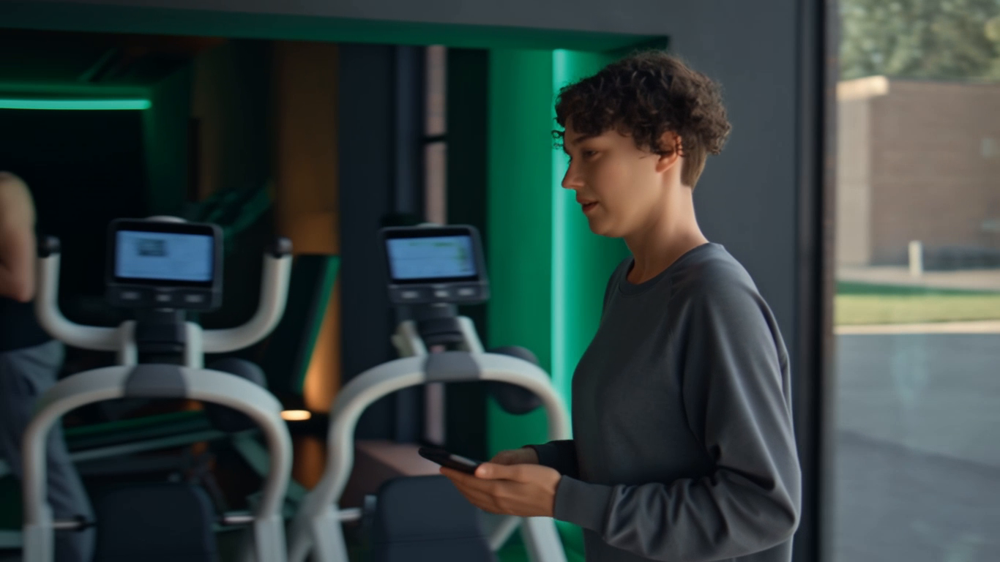

Kund
Iron House Gym
Ett lokalt gym med bra utrustning men för svag kommunikation mot nya medlemmar.
GymBro Genius AI skapade kampanjen No Ego. Just Reps.: ett komplett AI-baserat materialpaket med text, bild, video och ljud.
Ett lokalt gym med bra utrustning men för svag kommunikation mot nya medlemmar.
Personer som vill träna men känner sig osäkra, ovana eller rädda för att göra fel.
Ett budskap som sänker pressen och visar att det viktigaste är att börja.
Iron House Gym fick många nya medlemmar vid kampanjer, men flera slutade efter bara några pass. De hade inte ett träningsproblem först och främst — de hade ett kommunikationsproblem.
Vi byggde ett helt nybörjarpaket där varje del hjälper kunden på olika sätt. AI användes för att skapa många versioner snabbt, men materialet valdes och förbättrades för att passa målgruppen.
Kampanjen visar att gymmet är för vanliga nybörjare, inte bara personer som redan kan träna.
Träningsguiden ger en enkel startplan, vilket minskar osäkerheten under första passet.
Text, video, röst och design skapar en tydlig identitet: trygg, modern och hjälpsam.
Texterna är AI-stödda men redigerade för att låta mer mänskliga, mindre säljiga och mer anpassade till nybörjare.
Syfte: passa affisch, webb och kampanjsida.
Syfte: passa Reels/TikTok/Instagram och låta naturlig för unga.
Här används AI-genererade/AI-baserade visuella scener som visar nybörjarens resa: osäkerhet, hjälp och trygg träning.

En person står utanför gymmet och tvekar. Bilden passar som kampanjens “problem-bild”.

Mobilen visar en enkel träningsguide. Bilden gör AI-lösningen konkret och lätt att förstå.



Passet är kort, konkret och använder maskiner som är lättare att kontrollera än fria vikter. Det minskar risken att nybörjaren känner sig överväldigad. Språket är också enkelt: det beskriver vad personen ska göra, inte bara träningsfacktermer.
Kundcaset visar inte bara vad GymBro Genius AI “kan erbjuda”, utan hur tjänsten faktiskt skulle hjälpa ett gym i praktiken. Problemet är tydligt, lösningen är konkret och alla medier — text, bild, video, ljud och layout — förstärker samma mål: att göra första gympasset mindre skrämmande.